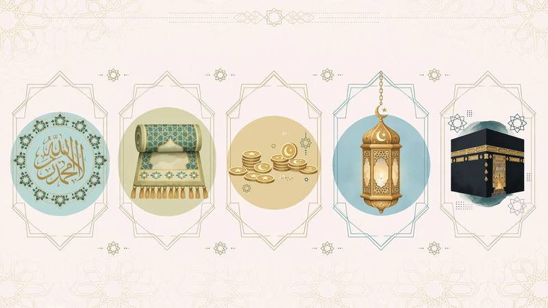

5 Pillars of Islam Explained - Shahada, Salah, Zakat, Sawm, Hajj [2026]

The 5 Pillars of Islam are the foundation of a Muslim's life. The Prophet Muhammad ﷺ said: "Islam is built on five pillars" [Bukhari & Muslim]. Every Muslim in USA, UK, Canada must know them correctly, not just by culture but with evidences from Quran and Sunnah.
Table of Contents
- What are the 5 Pillars of Islam?
- 1. Shahada - Declaration of Faith
- 2. Salah - The Five Daily Prayers
- 3. Zakat - Obligatory Charity
- 4. Sawm - Fasting in Ramadan
- 5. Hajj - Pilgrimage to Makkah
- FAQ for Muslims in USA & UK
What are the 5 Pillars of Islam?
Hadith Jibril explains: Islam is built on five: to testify that there is no god but Allah and Muhammad is His Messenger, to establish prayer, to give Zakat, to fast Ramadan, and to perform Hajj if able. These are not optional - they are obligations.
1. Shahada - Ashhadu an la ilaha illa Allah
To testify with tongue and believe in heart that none has the right to be worshipped but Allah, and Muhammad ﷺ is His final Messenger. It has 2 parts: Tawheed and Risalah. Conditions: knowledge, certainty, sincerity, truthfulness, love, submission, acceptance.
Allah says: "Know that there is no deity worthy of worship except Allah" [Quran 47:19].
2. Salah - The Five Daily Prayers
Salah is the second pillar and the first deed judged on Day of Judgment. 5 prayers: Fajr, Dhuhr, Asr, Maghrib, Isha. Allah says: "Indeed, prayer has been decreed upon the believers a decree of specified times" [Quran 4:103] and "And establish prayer and give Zakah" [Quran 2:43]. Learn correct Fiqh of Salah from our Islamic Studies course.
3. Zakat - Obligatory Charity (2.5%)
Zakat purifies wealth. Every Muslim who owns Nisab for one lunar year must pay 2.5%. Allah says: "And those in whose wealth there is a recognized right for the needy and deprived" [Quran 70:24-25]. Who can receive it? Detailed in Quran 9:60 - explained in our guide 8 Categories Eligible for Zakat.
4. Sawm - Fasting in Ramadan
Fasting from dawn to sunset in Ramadan, abstaining from food, drink, and desires for Allah. Allah says: "O you who have believed, decreed upon you is fasting as it was decreed upon those before you" [Quran 2:183]. It builds Taqwa and patience.
5. Hajj - Pilgrimage to Makkah
Once in a lifetime for those physically and financially able. Allah says: "And [due] to Allah from the people is a pilgrimage to the House - for whoever is able to find thereto a way" [Quran 3:97]. Hajj erases sins and unites Muslims worldwide.
🌙 Islamic Studies Cluster - Next Steps
You learned 5 Pillars (Islam). Now learn 6 Pillars of Faith (Iman):
Frequently Asked Questions
What are 5 Pillars of Islam in order?
1. Shahada (Faith), 2. Salah (Prayer), 3. Zakat (Charity), 4. Sawm (Fasting Ramadan), 5. Hajj (Pilgrimage).
Are 5 Pillars mentioned in Quran?
Yes, all are mentioned in Quran: Shahada in 47:19, Salah in 4:103, Zakat in 2:43 and 9:60, Sawm in 2:183, Hajj in 3:97. Also summarized in Hadith of Jibril.
Can kids learn 5 Pillars online?
Yes, at Al Shimaa Academy we teach 5 Pillars with stories, visuals, and simple English for kids age 6+ in USA, UK, Canada.